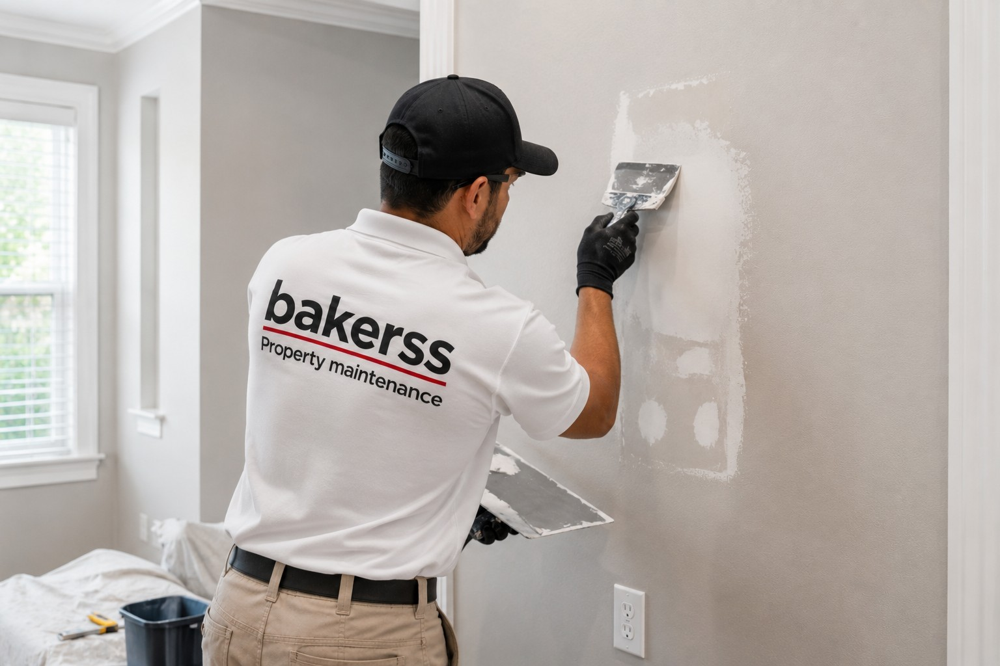

Handyman Services in Myrtle Beach, Murrells Inlet & Horry County, SC
Drywall repair, door adjustments, screen replacement, minor repairs, and property punch-lists. One call, one invoice, one team — no more coordinating multiple vendors for your property's maintenance to-do list.

Silo: Property Trades
Handyman Services for Coastal Horry County Properties
Every property has a punch-list — a collection of minor repairs that need attention but don't justify hiring separate specialists for each one. Drywall scuffs, sticking doors, torn screens, broken cabinet hardware, loose handrails, and a dozen other small items accumulate into a property maintenance backlog. Bakerss clears your punch-list efficiently — one call, one team, one visit.
This is especially valuable for vacation rental owners and absentee property managers who can't be on-site to coordinate multiple vendors. Bakerss acts as your on-the-ground maintenance crew — the team that handles everything that doesn't require a full licensed specialist.
What Our Handyman Services Service Includes
- ✓ Drywall repair, patching, and texture matching
- ✓ Interior door adjustment, alignment, and hardware repair
- ✓ Screen door and window screen repair and replacement
- ✓ Cabinet hardware tightening and replacement
- ✓ Towel bar, curtain rod, and shelf installation
- ✓ Caulk removal and reapplication (bathrooms, kitchens)
- ✓ Weather stripping replacement
- ✓ Minor wood trim repair and replacement
- ✓ Baseboard and molding repair
- ✓ Picture hanging and furniture assembly
- ✓ Pre-season and pre-rental property walk-throughs
Coastal Considerations in Horry County
- ✓ Humidity warping — coastal humidity causes wood doors, cabinets, and trim to swell and warp requiring periodic adjustment
- ✓ Screen damage — coastal wind and insects accelerate screen wear; rentals need frequent screen inspection and replacement
- ✓ Salt-air hardware — exterior and coastal-exposed hardware corrodes faster; regular inspection and replacement is important
- ✓ Rental turnover punch-lists — between guest stays, rental properties accumulate minor damage that must be cleared before the next arrival
Combine Handyman Services With These Property Trades
Keep your property completely maintained with these complementary services — all from one vendor:
Handyman Services by Location
Handyman Services Across Horry County — By City
Handyman Services in Myrtle Beach, SC
Myrtle Beach vacation rental owners rely on Bakerss for between-stay punch-list clearance that keeps their properties guest-ready and review-worthy. One call clears the full maintenance list.
Myrtle Beach Services →Handyman Services in Murrells Inlet, SC
Murrells Inlet homeowners appreciate having one trusted handyman team for the door, screen, drywall, and hardware issues that coastal humidity accelerates in waterfront properties.
Murrells Inlet Services →Handyman Services in Surfside Beach, SC
Surfside Beach property owners use Bakerss for pre-season property walk-throughs and punch-list repairs that prepare rentals and second homes for the summer occupancy season.
Surfside Beach Services →Handyman Services in Garden City, SC
Garden City rental owners need fast, reliable handyman service between guest turnovers. We handle screen repairs, door adjustments, drywall patches, and everything else on the list.
Garden City Services →Handyman Services in Horry County, SC
We provide handyman services throughout Horry County — one team for all the minor repairs that keep your property well-maintained without managing multiple vendors and schedules.
Horry County Services →Common Questions
Handyman Services FAQ — Myrtle Beach & Horry County
Get Handyman Services in Myrtle Beach — Your Entire Punch-List Handled
Serving Myrtle Beach, Murrells Inlet, Surfside Beach, Garden City, and all of Horry County. One call, one team, one invoice for everything your property needs.